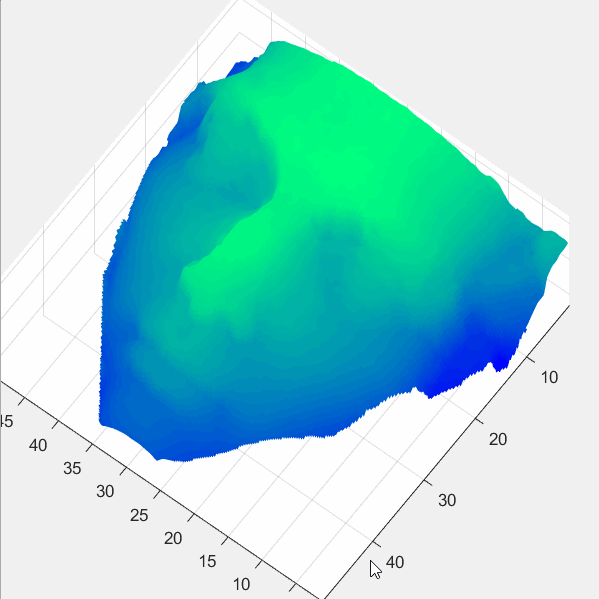

Fully automated Time-of-Flight 3D imaging

This project is a continuation of the work done by Dr. Fengqiang Li and Dr. Florian Willomitzer. Using a dual wavelength interferometer, it can acquire accurate 3D data of a given object. In conjunction with a lock-in camera, the method is capable of measuring the depth profile of any surface type and material. Compared to its previous iterations, the current system is fully automated so a user can acquire as much data as they want just by entering their desired parameters. We are currently exploring other applications of this system, in addition to the line-of-sight 3D imaging.